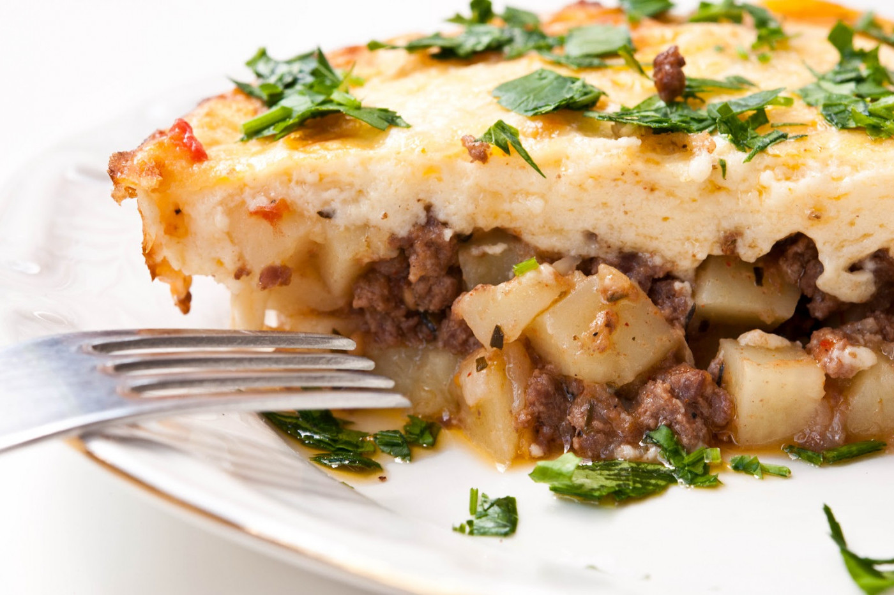

Description
I learned this from my Bulgarian mother in law though it's probably Turkish in origin. The recipe calls for
'chubritsa', a Bulgarian herb that can be difficult to find in the states, so basil can be substituted in its
place.
Ingredients
- 5 tablespoons olive oil
- 1 pound ground beef
- 1 teaspoon ground paprika
- 1 teaspoon ground cumin
- 1 teaspoon salt
- 1 teaspoon ground black pepper
- 4 potatoes, peeled and cut into 1/2-inch cubes
- 4 potatoes, peeled and cut into 1/2-inch cubes
- 1 tablespoon chopped summer savory (chubritsa)
- 1 egg, lightly beaten
- ⅔ cup yogurt
Steps
- Preheat oven to 325 degrees F (165 degrees C).
- Heat oil in a skillet over medium heat. Cook ground beef until evenly brown. Season with paprika, cumin,
salt, and pepper. Stir in potatoes, and cook for 2 to 3 minutes. Stir in tomato sauce, and summer savory.
Add enough water to just barely cover. Reduce heat, and simmer 15 minutes.
- Pour meat mixture into 9x13 inch baking dish, and spread evenly. In a small bowl, mix together the egg and
yogurt; pour, and spread evenly over meat mixture.
- Bake in preheated oven for 30 to 40 minutes, or until top is golden brown.